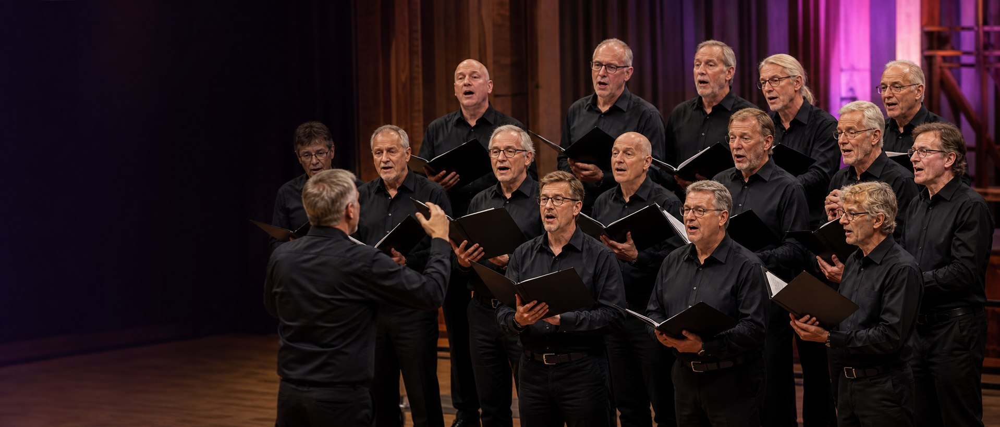

Krachtig en klassiek
Tijdloze koormuziek die raakt en verbindt.
- [TEST] The Rose
- [TEST] The Lord Bless You and Keep You
- [TEST] Nabucco – Va, pensiero

Muziek en repertoire
Van ingetogen ballads tot feestelijke meezingers. Ontdek de muziek die Spontaan met plezier zingt.
Ontdek ons repertoireUitgelicht
Een ode aan liefde en hoop. Dit zelfgemaakte testvoorbeeld laat zien hoe ieder lied een eigen verhaal en sfeer krijgt binnen onze samenzang.
Onze muzikale wereld
Ons repertoire kent vele gezichten, maar klinkt altijd als Spontaan.
Tijdloze koormuziek die raakt en verbindt.
Dichtbij en herkenbaar, met ruimte voor een glimlach.
Ritme, vrolijkheid en energie om van te genieten.
Luister mee
De korte, zelfgemaakte testtonen demonstreren de audiobediening en zijn geen kooropnamen.
Demo luisterfragment één
Demo luisterfragment twee
Demo luisterfragment drie
Achter de muziek
We selecteren muziek met een verhaal dat bij ons past.
Met aandacht en plezier werken we aan klank en uitspraak.
Stemmen, dynamiek en emotie komen samen.
Dan delen we het resultaat met ons publiek.
“Een lied krijgt pas betekenis wanneer we het samen vertellen.”
Nieuwsgierig?
Luister, zing mee of ontmoet ons bij een optreden.